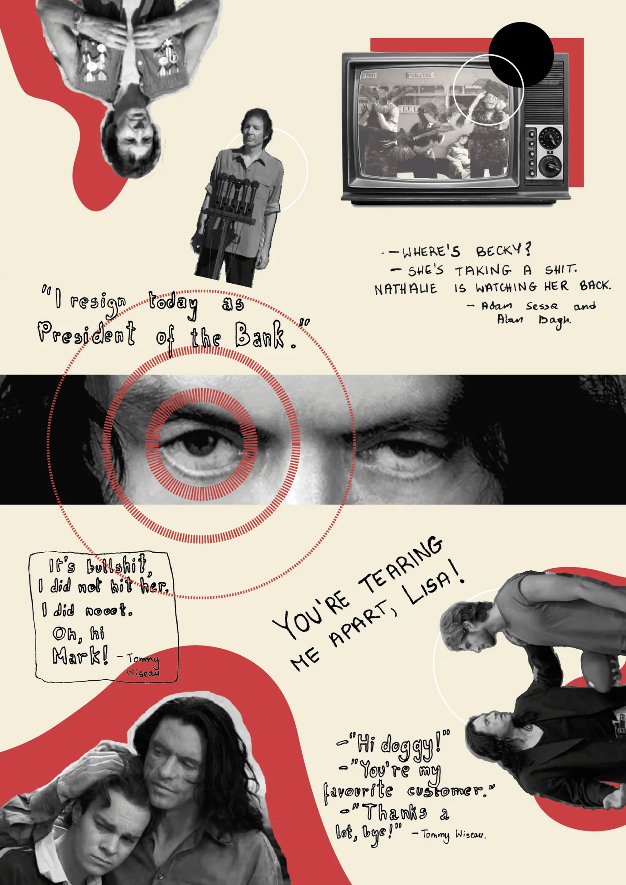

Cheap Absurdity
“You’re tearing me apart, Lisa!” is a quote which is nothing short of iconic. The delivery of the line and the senseless surrounding storyline of The Room makes for the absurdity of what is happening on-screen. The Room, Birdemic: Shock and Terror and virtually anything by Neil Breen are films that are just bad, yet something still draws us to watch and cherish the moments of these disastrous flops.

The enigmatic persona of Tommy Wiseau and the making of the worst movie ever made was attempted to be explored (and monetised on) in James Franco’s The Disaster Artist. This kind of elevation of failure to the status of art could be seen as pretentious, but it also tells us something about ourselves.
We create relationships with the spaces of our home, office, school, shop or… rooftop and understand how we position ourselves within them. But when this relationship, both with space and reality in general is translated into a two-dimensional storyline by somebody who has not understood the art of filmmaking, something amazing happens. Everything is twisted, turned upside down, and most of all seems like an absurd fever-dream. But this absurdity in cheap understanding of space brings something more, it brings the simple honesty that we long for. The Room ‘s budget was Wiseau’s self-raised 6 million US dollars, which covered the set, actors, equipment and obviously the enormous number of takes, as the creator could not be satisfied with his own performance. The low budget does not mean that the film is doomed to be bad, considering that around the same time, the beloved Little Miss Sunshine was made for 8 million US dollars, and a legendary Brazilian masterpiece City of God was completed with only 3.3 million. Low budget is one thing, but the amateur way of translating space into a moving picture, presented two-dimensionally provides the viewers with honesty that is rare to find. Even though The Room has a very simple concept and the set, as suggested in the title, is a limited space itself, the shots are confusing, and the movements and dialogues abstract in the weirdest of ways.
Inevitably, these kinds of works are born from the lack of self-realisation and seeing oneself as a genius beyond the currently understood borders. The 2010 Birdemic, for instance, warns us about the effects of climate change and we could argue that these days, it is more relevant than ever. Neil Breen, the undignified master of green screen, tells us about the threats of government corruption, and provides us with unforgettable performances. As a result, the commerce, the iconic value and status that follow these films proves that they bring a certain prowess.
Does it tell us something more about the cinema or the human understanding of space in general? Now, with the world becoming full of amateur filmmakers, new ways are emerging, and they are changing the way we think about spaces, images of it and our own presence within it. To enter other people’s heads and visions without the army of producers, set designers and consultants presents the vision as being pure and raw, straight from the conscience of the ‘genius’ mind. We all want to be like them. To do our thing against all odds.